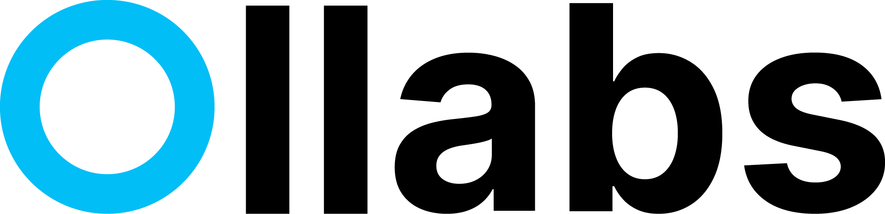

The warm, human, no-ads way to put a cause, team, or moment on everyone's photo. This book is how Ollabs looks, sounds, and feels.
The name says it. Ollabs is a play on collabs, short for collaboration. It is about people coming together behind one thing. You make a frame for a cause, team, or event, you share one link, and your people add it to their profile photo. The count climbs. The collab shows.
Ollabs, from collabs, from collaboration. Coming together is the whole point.
Rally your people, one link. Use it as the tagline everywhere.
Clean, fast, free. No ads, no signup, no clutter. The anti-Twibbon.
Causes, sports teams, events, fundraisers, communities, and small brands who want their people wearing the same badge without hiring a designer.
Twibbon is slow, cluttered, and full of ads. Ollabs is the opposite: one clean link, a frame on your photo in seconds, nothing in the way.
If Ollabs were a person, it would be the friend who gets the whole group to show up wearing the same shirt, and makes it feel easy and fun rather than like a chore. Four traits guide every choice.
Anyone can start or join in under a minute. We lower the bar, we never gatekeep, and we assume good intent.
There is real energy here. We celebrate the count climbing and the people showing up. We are proud, not pushy.
Plain words, real claims, no fake hype. We say what the tool does and let it do it. No dark patterns.
It looks made, not generated. Warm cream, a confident blue, type with character. Small details, done with care.
Short sentences. Second person. Verbs over adjectives. Talk like a helpful friend, not a marketing deck. When in doubt, cut words until only the point is left.
Use contractions. Use numbers. Speak to one person. Keep it kind and a little proud.
Buzzwords, hype, exclamation pile-ups, corporate hedging, and em dashes.
Commas and periods carry the rhythm. No em dashes anywhere. Sentence case for almost everything.
Ollabs comes from collabs, and the mark tells that story. The C in collabs opens up into the O, a ring, and that ring is the frame you put around a photo. Collaboration, a circle, a frame, one idea in one mark. Lead with the ring and the wordmark reads instantly.

Keep space equal to the height of one O on all sides. Let the mark breathe.
The blue ring works solo as an app icon, favicon, or avatar badge.
Never below 20px tall on screen. Below that, use the ring only.
One confident blue does the branding. A warm cream keeps it human and away from the generic dark template look. Ink gives contrast and legibility. Coral and amber are small sparks, used rarely.
About 60 percent cream, 25 percent ink, 12 percent blue, and 3 percent coral and amber combined. The sparks stay rare so they keep their pop.
Headlines in Bricolage Grotesque give instant character, a little wonky and very human. Inter handles body and UI, clean and legible. Two fonts, clear jobs, no exceptions.
Bricolage Grotesque, weight 800, tight tracking. Sentence case. Highlight one phrase in Blue Deep.
Inter, 400 to 600. Comfortable line height. Never set body in the display face.
Inter 700, uppercase, wide tracking, small. Used for counters and eyebrows.
Rounded, warm, and calm. Generous radius, soft borders on cream, one clear primary action per screen. Here is how the core pieces look in the new system.
Primary is blue with ink text. Dark is the calm alternative. Ghost for tertiary. Coral only for supporter or celebration moments.
Cream field, soft border, blue focus ring. Placeholder is muted, never a fake label.
White on cream, 18px radius, 1px warm border. No heavy shadows, no glow.
12px on controls, 18 to 24px on cards. Roomy padding. Let things breathe.
Every campaign is a circular frame around a real person's photo. Keep rings clean and even. Blue is the default. Coral and amber rings are for campaigns that need a different tone. Custom uploads keep the outer design and open a window in the center.
Real people, real phones, warm natural light. Candid over posed. Faces welcome. No slick stock, no fake smiles.
Rings and circles echo the logo. Use them as decoration, cropped off edges, at low opacity behind content.
A preview of the direction on a real screen. This is the target for the redesign once you approve the book.
One frame, one link, and everyone shows up wearing it. Free, no signup, no ads.